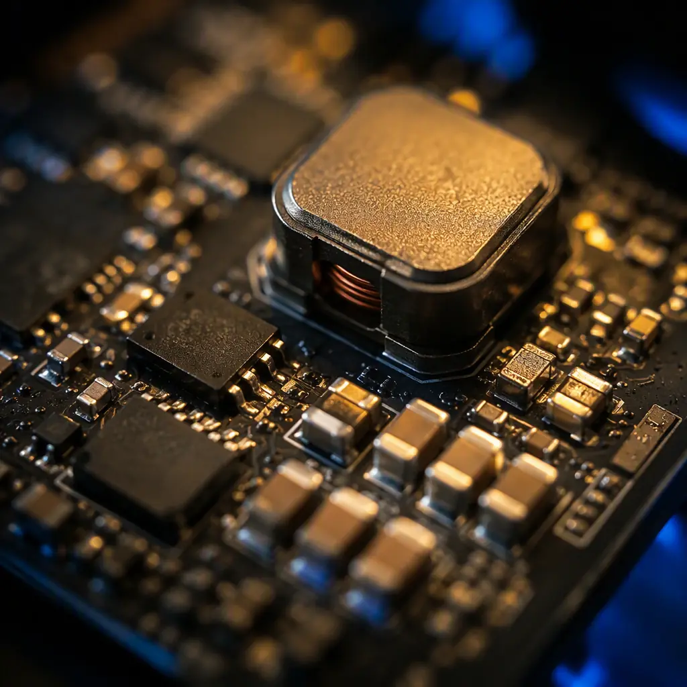
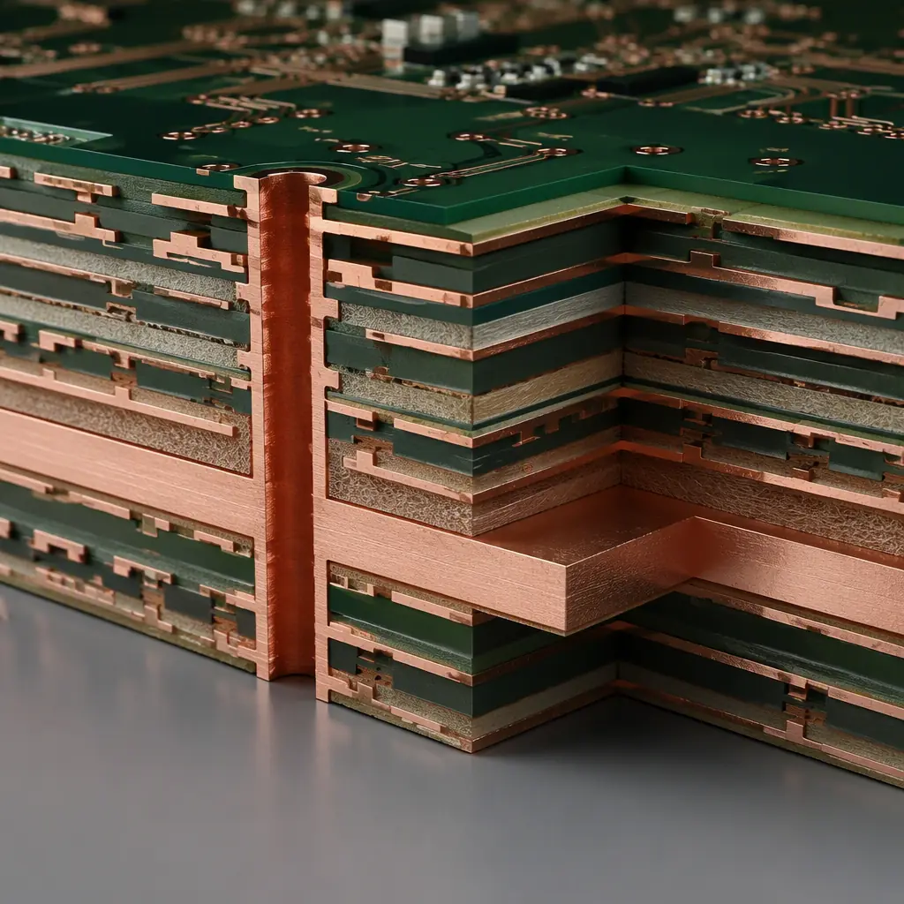
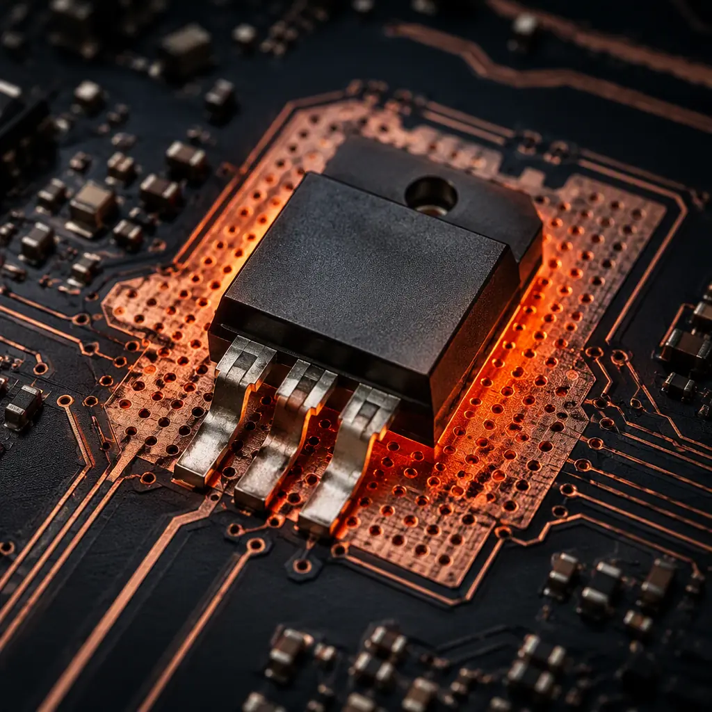

Switch-mode power supplies (SMPS) are the hardest class of board to lay out, because they combine fast edge rates, high di/dt loops, and high current in the same small area. A buck converter switching at 500 kHz with 5 ns edges creates current transients that couple into every nearby trace — and the difference between a clean layout and an EMI-failing one is often just a few millimeters of copper placement. The physics does not care about your schematic: the schematic is correct on paper, but the layout decides whether the real board radiates, oscillates, or runs hot.
At Huaxing PCBA we fabricate and assemble power electronics for EV chargers, industrial drives, and high-current battery systems daily. Our DFM team reviews switching layouts against the rules below on every power board — and we see the same handful of mistakes repeated. This guide distills the layout rules that matter, written for design engineers and for buyers who need to know which layout quality signals to look for when qualifying a power-electronics supplier.

Rule 1 — Minimize the High di/dt Switching Loop
The single most important rule in SMPS layout: the loop formed by the input capacitor, the high-side switch, and the low-side switch (or diode) must be as small as physically possible. This loop carries the full switching current with rise times measured in nanoseconds, and its area is directly proportional to the radiated EMI and to the voltage spikes seen by the switches. Every square millimeter of loop area you save reduces radiated noise and switching stress.
Key Takeaway: In a buck converter, the critical loop is: input capacitor → high-side FET → inductor → low-side FET → back to input capacitor. Place a low-ESL ceramic capacitor (0.1-1 µF, 0402 or 0603) directly across the switch pair — not at the board edge, not behind the inductor. A 10 mm loop at 5 ns edges radiates dramatically more than a 3 mm loop at the same edge rate.
Practically, this means the input bypass capacitors sit immediately adjacent to the MOSFET bridge, sharing the same copper pour, with vias down to the power plane directly under the components. If your layout tool shows the input cap more than 5-8 mm from the switch node, move it. Our power integrity guide covers the plane-side of this same problem in more depth.
Rule 2 — Keep the Switch Node Small but Generous
The switch node (the connection between the high-side FET, the low-side FET, and the inductor) has fast voltage transitions — dv/dt of 1-10 V/ns is common. This node is a radiating antenna if it is large, but it also carries the full load current, so it cannot be a thin trace. The compromise: make the switch node a compact copper pour, not a long trace, with just enough area to carry current and dissipate heat. Do not route the switch node under the controller IC, under sense lines, or parallel to the output traces for any distance.
Rule 3 — Place the Inductor to Control Its Stray Field
The inductor is the biggest magnetic-field source on the board. A shielded inductor (drum core with a closed magnetic path) should be your default for any design where EMI matters; unshielded rod inductors radiate into nearby traces and are a common cause of noise on adjacent analog circuitry. Place the inductor with its field axis oriented away from sensitive traces — and never route a high-impedance sense line or feedback trace directly beneath an unshielded inductor. Our EMI/EMC design guide covers shielding strategy in detail.
Rule 4 — Route Sense Lines as Kelvin Pairs
Voltage-mode and current-mode controllers both depend on accurate sensing of the output voltage and inductor current. The feedback/sense lines must be routed as a tight parallel pair directly to the load-side sense point — never daisy-chained from a point mid-trace, and never sharing a long return path with power current. The classic failure: the output voltage is sensed at the regulator output pad, while the load sees a 50-100 mV drop across the output trace — the regulator then regulates the wrong point and the load undervolts. Route the sense pair to the load's own input capacitor for true remote sensing.
Rule 5 — One Solid Ground Plane, No Split Under the Converter
Do not split the ground plane under a switching converter. Split planes create return-current detours that enlarge every loop in the layout. The correct approach for mixed power/analog/digital boards is a single continuous ground plane, with the noisy power section physically separated from the sensitive analog section by distance and placement — not by a slot in the copper. If you must partition, do it in component placement, not in the ground plane. Our mixed-signal grounding guide explains the placement-based partitioning method.


Rule 6 — Size the Copper for Current AND Temperature
Power traces must be sized for both current capacity and temperature rise. At 2 A in a 1 oz trace, a 0.5 mm trace rises about 20-30 °C above ambient; the same current in a 2 mm trace rises only a few degrees. For high-current rails, use the IPC-2152 charts rather than the older IPC-2221 tables — they give more realistic cross-section requirements for modern board construction. Our trace width and current capacity guide walks through the math with worked examples. Where a rail must carry 5 A or more on a single layer, consider heavier copper (2-3 oz) or parallel vias to the plane — see our copper weight selection guide.
Rule 7 — Thermal: the MOSFETs and Inductor Need a Heat Path
A switching converter's efficiency losses concentrate in the switches and inductor. Give the MOSFETs a thermal path: multiple thermal vias from the thermal pad to an internal or bottom copper pour, and keep that pour connected to the ground plane for spreading. The inductor's copper windings also dissipate real power at high current — the PCB copper under it should be generously sized, not a minimum-width trace. Thermal design and layout are the same task in power electronics; our thermal management guide covers the full methodology, and our thermal cycling testing guide explains how to verify solder-joint reliability on the parts that run hottest.
Rule 8 — Decouple the Controller IC Properly
The PWM controller's VCC pin needs a small ceramic capacitor (0.1 µF) placed directly at the pin, plus a bulk capacitor (1-10 µF) nearby. The bootstrap capacitor for the high-side driver must be as close as possible to the driver pins — its loop carries the gate-charge current for every switching cycle. A bootstrap cap placed 10 mm away adds enough inductance to slow the gate drive and increase switching losses, which shows up as extra heat in the high-side FET.
Rule 9 — Keep Gate Drive Traces Short and Direct
Gate drive traces from the controller to the FETs should be short, direct, and wide enough to carry the peak gate current without excessive inductance. A long, thin gate trace rings, and the ringing can exceed the FET's Vgs rating — killing the part. Add a small series gate resistor (2-10 Ω) near the FET to damp ringing; place it within a few mm of the gate pin. If the layout forces a longer drive trace, increase the gate resistance and slow the edge rate deliberately — controlled edge rates are better than uncontrolled ones.
Rule 10 — Verify with the Right Tests Before Production
Layout quality is verified by measurement, not by inspection. Before committing a switching design to volume production, run: (1) efficiency and thermal measurement at full load, (2) switching-node waveform check for excessive ringing, (3) conducted and radiated EMI pre-compliance, and (4) cross-section verification of the power vias and plated copper on first articles. Our test method guide helps you choose the right electrical test for power boards, and our FAI guide covers the checks that catch layout-to-fabrication mismatches before they reach your customers.
Key Takeaway: SMPS layout is 80% loop discipline: small switching loops, Kelvin sense routing, one unbroken ground plane, short gate drives, and a real thermal path. Boards that follow these rules pass EMI the first time; boards that don't end up in a debug loop that costs more than the entire layout effort.
What to Ask Your Power-PCB Supplier
When you qualify a fabricator or assembler for a switching design, the layout-quality signals to look for are concrete: does the DFM review check critical-loop placement, sense-line routing, and thermal via coverage? Can they deliver 2 oz and heavier copper reliably, with cross-section verification? Do they offer burn-in / ESS for power boards that must survive field stress? At Huaxing PCBA, our engineering team reviews switch-node loops and thermal vias on every power-electronics order, and our microsection lab verifies the plated-copper quality that carries your switching currents. Send us your layout files for a free DFM review that includes an SMPS-specific checklist.